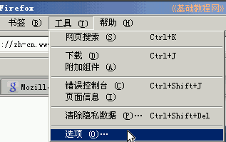
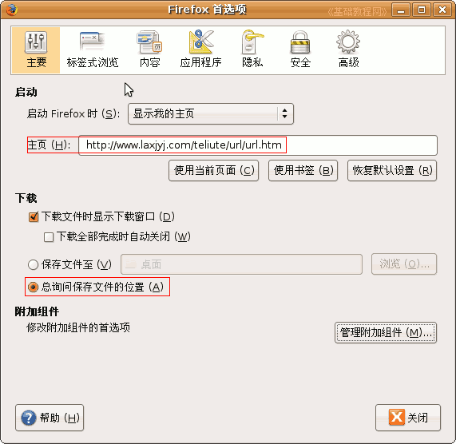

Firefox3 基础教程
作者：TeliuTe 来源：基础教程网
二、设置选项 返回目录 下一课Firefox安装好以后，可以根据自己的操作习惯，进行一些简单设置，下面我们来看一个练习；
1、常规选项
1）Ubutnu系统里点菜单“编辑－首选项“命令，Windows系统里点菜单“工具－选项”命令，打开设置面板；

2）在出来的选项面板中，第一个是“主要”标签，按照从上到下的顺序进行设定；
把“主页”修改成自己常去的页面，下载位置设为“总是询问”；

2、标签式浏览
1）在面板上面点“标签式浏览”项，进入标签设置；
把第一个方框“关闭多个标签”勾去掉，把下面的“在新标签链接”勾上；
3、内容和应用程序
1）内容主要是网页的显示样式，像文字大小、颜色、背景色那些，可以把文字大小修改一下；点中间“字体和颜色”右边的“高级”按钮，出来一个面板，把最小字体大小设为16，点“确定”返回；
2）应用程序种列出了如果网页中有列表里的内容，则会调用相对应的程序来打开，
这个一般不用更改；
4、隐私
1）再点击上面的“隐私”标签，可以把历史里的“天数”减小一些，
点“立即清除”可以清理上网痕迹，并且加快浏览器的速度；
5、安全
1）在安全中把“记住密码”前面的勾去掉，一般来说这样要更安全些，尤其在公共机房里；
上面第二个勾“告诉我是否嫌疑”的选项，是防止恶意网站的，可以阻止打开一些恶意站点。
6、高级
1）高级里分四项，一般不用修改，在“网络”项里面可以更改磁盘缓存，也就是上网的临时文件容量；
本节学习了Firefox设置选项的基本操作，如果你成功地完成了练习，请继续学习下一课内容；
本教程由86团学校TeliuTe制作|著作权所有
基础教程网：http://teliute.org
美丽的校园……
转载和引用本站内容，请保留版权信息和本站链接。